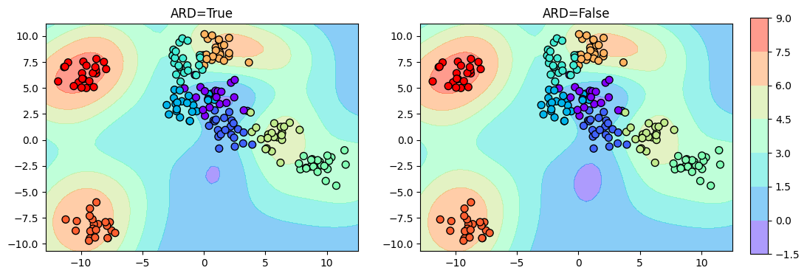
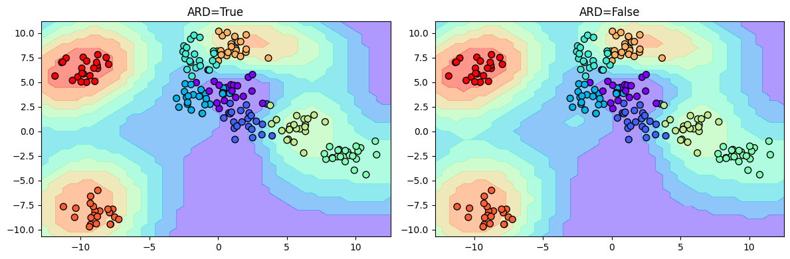
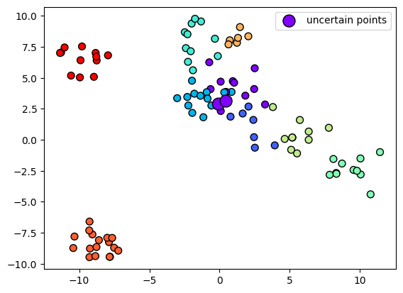
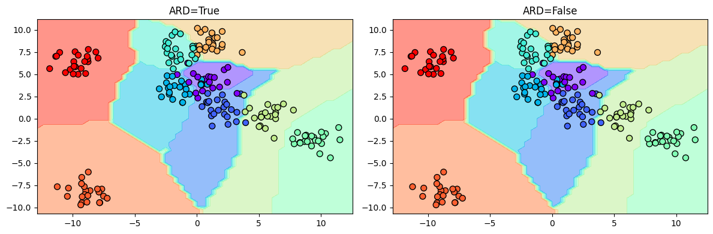
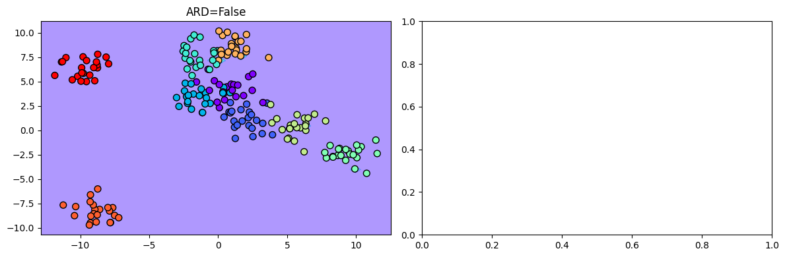

import GPy
import numpy as np
from sklearn.datasets import make_blobs, make_moons, make_circles
from sklearn.metrics import classification_report
from sklearn.preprocessing import OneHotEncoder
from sklearn.model_selection import train_test_split
from sklearn.gaussian_process import GaussianProcessClassifier, kernels
import matplotlib.pyplot as pltCommon functions
def get_kernel(ard):
return GPy.kern.RBF(2, ARD=ard)
def create_and_fit_model(model_class, X, y, ard, **kwargs):
model = model_class(X, y, get_kernel(ard), **kwargs)
model.optimize()
return modelGenerate Synthetic Data
X, y = make_blobs(n_samples=200, centers=9, random_state=0)
# X, y = make_moons(n_samples=200, noise=0.1, random_state=0)
y = y.reshape(-1, 1)
encoder = OneHotEncoder(sparse=False)
encoder.fit(y)
plt.scatter(X[:, 0], X[:, 1], c=y, s=50, cmap='rainbow', edgecolor='k');
grid1 = np.linspace(X.min(axis=0)[0]-1, X.max(axis=0)[0]+1, 50)
grid2 = np.linspace(X.min(axis=0)[1]-1, X.max(axis=0)[1]+1, 50)
Grid1, Grid2 = np.meshgrid(grid1, grid2)
X_grid = np.vstack([Grid1.ravel(), Grid2.ravel()]).TTrain-test split
X_train, X_test, y_train, y_test = train_test_split(X, y, test_size=0.5, random_state=42)
y_train_one_hot = encoder.transform(y_train)
y_test_one_hot = encoder.transform(y_test)Treat it as a regression problem
Here we can regress over the class labels as if they are discrete realizations of a continuous variable. We will round the predictions to the nearest integer to get the class labels.
ard_model = create_and_fit_model(GPy.models.GPRegression, X_train, y_train, ard=True)
non_ard_model = create_and_fit_model(GPy.models.GPRegression, X_train, y_train, ard=False)
print("ARD")
preds = ard_model.predict(X_test)[0].round().astype(int)
print(classification_report(y_test, preds))
print("Non-ARD")
preds = non_ard_model.predict(X_test)[0].round().astype(int)
print(classification_report(y_test, preds))ARD
precision recall f1-score support
0 0.67 0.46 0.55 13
1 0.33 0.57 0.42 7
2 0.57 0.62 0.59 13
3 0.71 0.45 0.56 11
4 0.71 0.91 0.80 11
5 0.67 0.80 0.73 10
6 0.33 0.50 0.40 6
7 0.85 0.65 0.73 17
8 1.00 0.83 0.91 12
accuracy 0.65 100
macro avg 0.65 0.64 0.63 100
weighted avg 0.69 0.65 0.66 100
Non-ARD
precision recall f1-score support
0 0.60 0.46 0.52 13
1 0.27 0.43 0.33 7
2 0.57 0.62 0.59 13
3 0.83 0.45 0.59 11
4 0.73 1.00 0.85 11
5 0.62 0.80 0.70 10
6 0.38 0.50 0.43 6
7 0.92 0.65 0.76 17
8 1.00 0.92 0.96 12
accuracy 0.66 100
macro avg 0.66 0.65 0.64 100
weighted avg 0.70 0.66 0.67 100
We get the raw predictions as below:
fig, ax = plt.subplots(1, 2, figsize=(12, 4))
ax = ax.ravel()
i = 0
mappables = []
for model in [ard_model, non_ard_model]:
y_grid = model.predict(X_grid)[0]
mappable = ax[i].contourf(Grid1, Grid2, y_grid.reshape(Grid1.shape), cmap='rainbow', alpha=0.5)
mappables.append(mappable)
ax[i].scatter(X[:, 0], X[:, 1], c=y, s=50, cmap='rainbow', edgecolor='k')
ax[i].set_title(f"ARD={model.kern.ARD}")
i += 1
# put a common colorbar for both mappables
fig.colorbar(mappables[0], ax=ax, cax=fig.add_axes([0.92, 0.1, 0.02, 0.8]));
Now, let us see the classification boundary:
fig, ax = plt.subplots(1, 2, figsize=(12, 4))
ax = ax.ravel()
i = 0
for model in [ard_model, non_ard_model]:
y_grid = model.predict(X_grid)[0].round().astype(int)
ax[i].contourf(Grid1, Grid2, y_grid.reshape(Grid1.shape), cmap='rainbow', alpha=0.5)
ax[i].scatter(X[:, 0], X[:, 1], c=y, s=50, cmap='rainbow', edgecolor='k')
ax[i].set_title(f"ARD={model.kern.ARD}")
i += 1
plt.tight_layout()
Treat it as a multi-output regression problem
In this method, we train a jointly learn a GP model for each class in one v/s rest setting. We can get the predictions by taking the argmax of the predictions from each model.
ard_model = create_and_fit_model(GPy.models.GPRegression, X_train, y_train_one_hot, ard=True)
non_ard_model = create_and_fit_model(GPy.models.GPRegression, X_train, y_train_one_hot, ard=False)
print("ARD")
preds = ard_model.predict(X_test)[0].argmax(axis=1)
print(classification_report(y_test, preds))
print("Non-ARD")
preds = non_ard_model.predict(X_test)[0].argmax(axis=1)
print(classification_report(y_test, preds))ARD
precision recall f1-score support
0 0.80 0.62 0.70 13
1 0.67 0.86 0.75 7
2 0.85 0.85 0.85 13
3 0.92 1.00 0.96 11
4 1.00 1.00 1.00 11
5 0.90 0.90 0.90 10
6 1.00 1.00 1.00 6
7 1.00 1.00 1.00 17
8 1.00 1.00 1.00 12
accuracy 0.91 100
macro avg 0.90 0.91 0.91 100
weighted avg 0.91 0.91 0.91 100
Non-ARD
precision recall f1-score support
0 0.80 0.62 0.70 13
1 0.67 0.86 0.75 7
2 0.85 0.85 0.85 13
3 0.92 1.00 0.96 11
4 1.00 1.00 1.00 11
5 0.90 0.90 0.90 10
6 1.00 1.00 1.00 6
7 1.00 1.00 1.00 17
8 1.00 1.00 1.00 12
accuracy 0.91 100
macro avg 0.90 0.91 0.91 100
weighted avg 0.91 0.91 0.91 100
What will happen if we ignore the points where the predictions are below 0.5?
print("ARD")
pred_probas = ard_model.predict(X_test)[0]
pred_proba = pred_probas.max(axis=1)
mask = pred_proba > 0.5
preds = ard_model.predict(X_test)[0].argmax(axis=1)
preds_masked = preds[mask]
ground_truth_masked = y_test[mask]
print(ground_truth_masked.shape, preds_masked.shape)
print(classification_report(ground_truth_masked, preds_masked))ARD
(98, 1) (98,)
precision recall f1-score support
0 0.78 0.64 0.70 11
1 0.67 0.86 0.75 7
2 0.92 0.85 0.88 13
3 0.92 1.00 0.96 11
4 1.00 1.00 1.00 11
5 0.90 0.90 0.90 10
6 1.00 1.00 1.00 6
7 1.00 1.00 1.00 17
8 1.00 1.00 1.00 12
accuracy 0.92 98
macro avg 0.91 0.92 0.91 98
weighted avg 0.92 0.92 0.92 98
Let’s visualize the uncertain points:
plt.scatter(X_test[:, 0], X_test[:, 1], c=y_test, s=50, cmap='rainbow', edgecolor='k')
plt.scatter(X_test[~mask, 0], X_test[~mask, 1], s=150, c=y_test[~mask], cmap='rainbow', edgecolor='k', label='uncertain points');
plt.legend();
We see that some points close to the decision boundary are uncertain. We can now plot the decision boundary:
fig, ax = plt.subplots(1, 2, figsize=(12, 4))
ax = ax.ravel()
i = 0
for model in [ard_model, non_ard_model]:
y_grid = model.predict(X_grid)[0].argmax(axis=1)
ax[i].contourf(Grid1, Grid2, y_grid.reshape(Grid1.shape), cmap='rainbow', alpha=0.5)
ax[i].scatter(X[:, 0], X[:, 1], c=y, s=50, cmap='rainbow', edgecolor='k')
ax[i].set_title(f"ARD={model.kern.ARD}")
i += 1
plt.tight_layout()
Treat it as a One v/s Rest classification problem
Here we learn a separate model for each class. We can get the predictions by taking the argmax of the predictions from each model.
ard_kernel = kernels.ConstantKernel() * kernels.RBF(length_scale=[0.01, 0.01])
# non_ard_kernel = kernels.ConstantKernel() * kernels.RBF(length_scale=0.1)
ard_model = GaussianProcessClassifier(kernel=ard_kernel, random_state=0)
# non_ard_model = GaussianProcessClassifier(kernel=non_ard_kernel, random_state=0)
ard_model.fit(X_train, y_train.ravel())
# non_ard_model.fit(X_train, y_train.ravel())
print("ARD")
preds = ard_model.predict(X_test)
print(classification_report(y_test, preds))
# print("Non-ARD")
# preds = non_ard_model.predict(X_test)
# print(classification_report(y_test, preds))ARD
precision recall f1-score support
0 0.00 0.00 0.00 13
1 0.00 0.00 0.00 7
2 1.00 0.08 0.14 13
3 0.00 0.00 0.00 11
4 0.00 0.00 0.00 11
5 0.00 0.00 0.00 10
6 0.00 0.00 0.00 6
7 0.00 0.00 0.00 17
8 0.12 1.00 0.22 12
accuracy 0.13 100
macro avg 0.12 0.12 0.04 100
weighted avg 0.14 0.13 0.04 100
/home/patel_zeel/miniconda3/lib/python3.9/site-packages/sklearn/metrics/_classification.py:1318: UndefinedMetricWarning:Precision and F-score are ill-defined and being set to 0.0 in labels with no predicted samples. Use `zero_division` parameter to control this behavior.
/home/patel_zeel/miniconda3/lib/python3.9/site-packages/sklearn/metrics/_classification.py:1318: UndefinedMetricWarning:Precision and F-score are ill-defined and being set to 0.0 in labels with no predicted samples. Use `zero_division` parameter to control this behavior.
/home/patel_zeel/miniconda3/lib/python3.9/site-packages/sklearn/metrics/_classification.py:1318: UndefinedMetricWarning:Precision and F-score are ill-defined and being set to 0.0 in labels with no predicted samples. Use `zero_division` parameter to control this behavior.Visualizing the decision boundary:
fig, ax = plt.subplots(1, 2, figsize=(12, 4))
ax = ax.ravel()
i = 0
for model in [ard_model]:
y_grid = model.predict_proba(X_grid).argmax(axis=1)
ax[i].contourf(Grid1, Grid2, y_grid.reshape(Grid1.shape), cmap='rainbow', alpha=0.5)
ax[i].scatter(X[:, 0], X[:, 1], c=y, s=50, cmap='rainbow', edgecolor='k')
ax[i].set_title(f"ARD={bool(i)}")
i += 1
plt.tight_layout()